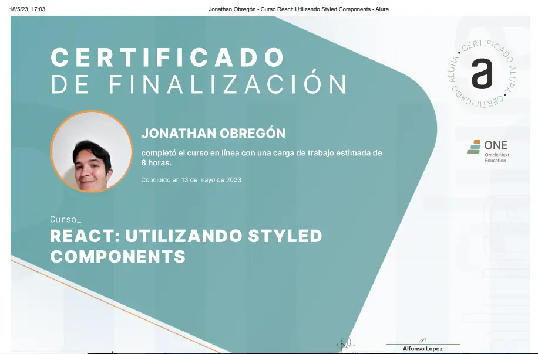

Galeria de certificados Ganados

titulo de desarrollo web Ganado
Certificado_de_Desarrollo
Certificado de Desarrollo de sitios web responsivos I
tecnicasefectivas
certificado tecnicas-efectivas
Desarrollo_de_sitios_web
Desarrollo_de_sitios_web

REACT
REACT:Desarrollando con javascritp
Git y GitHub: controle y comparta su código